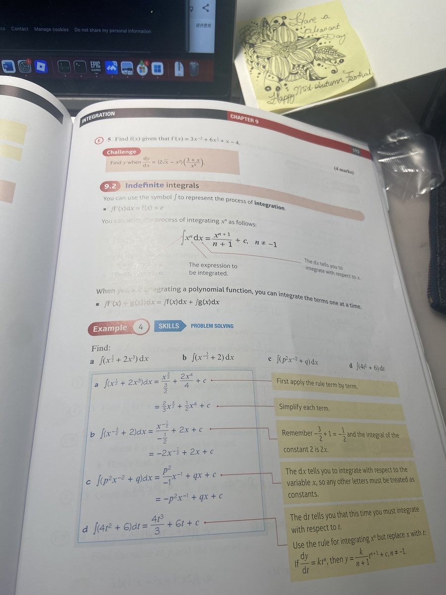

RedFox（2代目）🇲🇴🇭🇰
@FoxRed695449
@Satisfied_peace @huantim1 @Ryan007 @jianlvup I can’t stop laughing 🤣

正义必胜！和平必胜！人民必胜！
@Satisfied_peace
@huantim1 @Ryan007 @jianlvup 国外课程微积分只有最好的学生才读，除非中国国际学校像中国普通高中一样严格抓学习、考试和做题，否则没有几个能够掌握。最后都是出国读没什么鸟用的文科。英国最好的贵族学校升学读理工科大学的比例并不比公立学校高多少。整个西方的基础教育都是重文轻理，所以西方才需要才从亚洲大量引进理科人才。